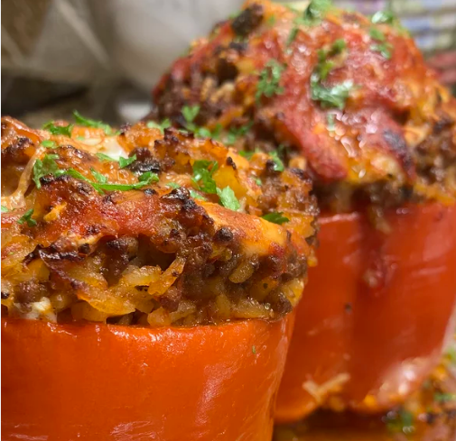

Stuffed Red Peppers!

STEP BY STEP INSTRUCTIONS
- 2 cups brown rice
- 4 cups water
- 1 pound ground beef
- 1 onion, diced
- ¼ cup chopped mushrooms, or to taste
- 3 cloves garlic, chopped
- 1 (26 ounce) jar tomato sauce
- 1 (16 ounce) can diced tomatoes
- 1 (6 ounce) can tomato paste
- 1 teaspoon Italian seasoning
- salt and ground black pepper to taste
- 6 red bell peppers, tops and seeds removed
- ¼ cup grated Parmesan cheese, or to taste
Directions
- Bring brown rice and water to a boil in a saucepan. Reduce heat to medium-low, place a cover on the saucepan, and simmer until the rice is tender, about 40 minutes; transfer to a large mixing bowl.
- Preheat oven to 350 degrees F (175 degrees C).
- Heat a large skillet over medium-high heat. Break ground beef into small pieces and place in the skillet. Add onion, mushrooms, and garlic; cook and stir until the beef is completely browned, 7 to 10 minutes. Mix beef mixture into brown rice.
- Stir tomato sauce, diced tomatoes, tomato paste, and Italian seasoning into the rice mixture and season filling with salt and black pepper.
- Arrange bell peppers in a baking dish. Spoon filling into bell peppers.
- Bake in preheated oven until the peppers are tender, about 1 hour. Sprinkle Parmesan cheese over the stuffed peppers to serve.